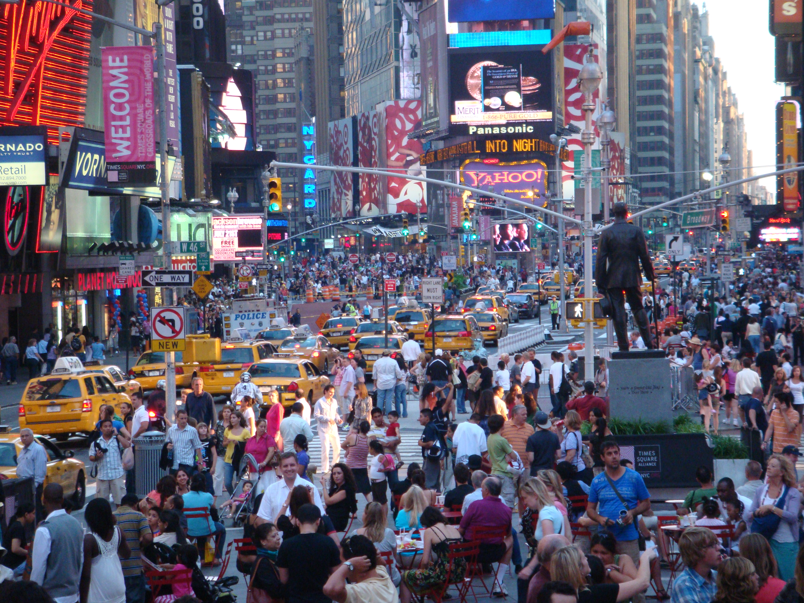

The city, character for character.
Real signs. Real street life. The perspective of a photograph, reconstructed in colored ASCII.

Building the character field…
Broadway at West 46th Street · photographed June 2009Same framing. Same proportions. All marks in the render are characters.
A still-image study to establish the composition before animation. Zoom to 200–400% to see individual characters and inspect the original advertisements. Tiny print remains limited by the source photo and character resolution. Earlier seasonal animation study →